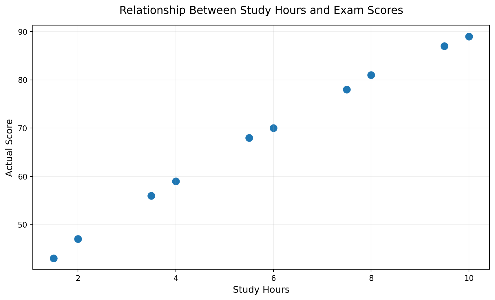
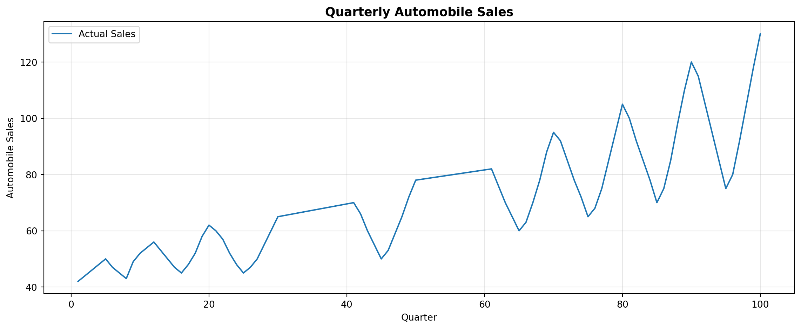
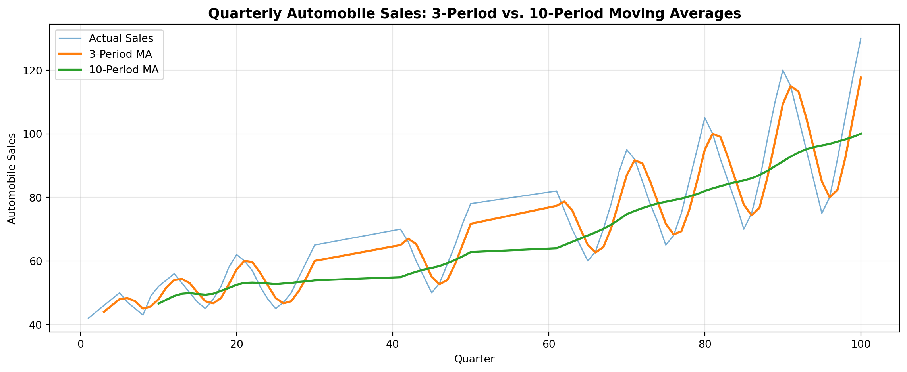
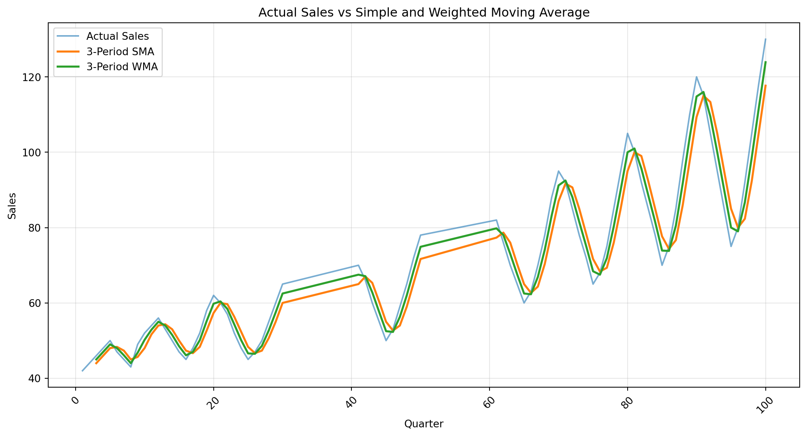

Classical forecasting techniques are a set of methods used to predict future values based on historical data. These techniques are widely used in various fields, including finance, economics, and supply chain management. In this section, we will explore some of the most commonly used classical forecasting techniques, including naive methods, moving average methods, exponential smoothing methods, Holt method, and Holt-Winters methods. We will also discuss their advantages and limitations, as well as how to implement them in practice.
1 Data Generating Process (DGP)
A data generating process (DGP) is a statistical model that describes how data is generated. It is a theoretical construct that helps us understand the underlying patterns and relationships in the data. In practice, we often do not know the true DGP, and we must rely on assumptions and approximations to make predictions.
Examples of DGPs include linear regression models, time series models, and stochastic processes. Understanding the DGP is crucial for selecting appropriate forecasting techniques and for interpreting the results of forecasts.
1.1 True DGP vs. Models
True DGP refers to the actual process that generates the data, while models are simplified representations of the DGP that we use for forecasting. Models may not capture all the complexities of the true DGP, but they can still provide useful insights and predictions. It is important to evaluate the performance of models against the true DGP to ensure their accuracy and reliability.
1.2 Illustration 1: DGP and Models - Study Hours and Exam Scores
Suppose we observe the following data for 10 students. Each student reports the number of hours they studied before an examination, and we observe their actual examination score.
Student
Study Hours
Actual Score
1
1.5
43
2
2.0
47
3
3.5
56
4
4.0
59
5
5.5
68
6
6.0
70
7
7.5
78
8
8.0
81
9
9.5
87
10
10.0
89
At this stage, we make no assumptions about how the data were generated.
We simply observe the relationship between study hours and actual scores.
1.2.1Data Display and Scatter Plot
Tip💻 Coding Session
import pandas as pdimport matplotlib.pyplot as plt# Create the datasetdf = pd.DataFrame({"Student": range(1, 11),"Study_Hours": [1.5, 2.0, 3.5, 4.0, 5.5,6.0, 7.5, 8.0, 9.5, 10.0],"Actual_Score": [43, 47, 56, 59, 68,70, 78, 81, 87, 89]})# Display the datadisplay(df)# Create scatter plotplt.figure(figsize=(9, 5.5))plt.scatter( df["Study_Hours"], df["Actual_Score"], s=80)plt.xlabel("Study Hours", fontsize=12)plt.ylabel("Actual Score", fontsize=12)plt.title("Relationship Between Study Hours and Exam Scores", fontsize=14, pad=15)plt.grid(alpha=0.2)plt.tight_layout()plt.show()
Program 1: Data Display and Scatter Plot
(a)
Student
Study_Hours
Actual_Score
0
1
1.5
43
1
2
2.0
47
2
3
3.5
56
3
4
4.0
59
4
5
5.5
68
5
6
6.0
70
6
7
7.5
78
7
8
8.0
81
8
9
9.5
87
9
10
10.0
89
(b)

1.2.2 What do we see?
The scatter plot suggests a positive relationship between study hours and examination scores.
Students who study more tend to obtain higher scores.
However, the relationship is not perfectly deterministic.
For example, students who study a similar number of hours do not necessarily obtain exactly the same score.
This suggests that something systematic is happening, but there is also some randomness in the data.
1.2.3 Signal and Noise
We can think of the observed score as consisting of two components:
Forecasting is essentially an attempt to identify the systematic component of a data-generating process and use it to predict future observations.
In time-series forecasting, the signal may take different forms:
Level
Trend
Seasonality
Cycles
The challenge is to distinguish these systematic patterns from random noise.
2 Naïve forecasting Techniques
Naïve forecasting techniques are simple methods that use historical data to make predictions about future values. These techniques are often used as a baseline for comparison with more complex forecasting methods. In this section, we will explore some of the most commonly used naïve forecasting techniques, including the naïve method, seasonal naïve method, and drift method. We will also discuss their advantages and limitations, as well as how to implement them in practice.
2.1 Naïve Method
Naive method is a simple forecasting technique that assumes that the future value of a time series will be equal to the most recent observed value. This method is often used as a benchmark for evaluating the performance of more complex forecasting methods. It is particularly useful for time series data that exhibit a random walk behavior, where the best prediction for the next value is simply the last observed value.
2.1.1 Example: Naïve Forecasting
Suppose we observe the following monthly closing prices of a stock:
Month
Month-End Stock Price (₹)
January
1,842.50
February
1,875.25
March
1,821.75
April
1,906.50
May
1,958.25
June
1,932.75
July
2,014.50
August
2,067.25
September
2,041.50
October
?
Question
Using the Naïve Forecasting Method, what would you predict the October month-end stock price to be?
The naïve method assumes that the forecast for the next period will be equal to the actual value observed in the current period.
\[
F_t = Y_{t-1}
\]
Therefore:
\[
F_{\text{October}} = Y_{\text{September}}
\]
\[
\boxed{F_{\text{October}} = 2,041.50}
\]
The October forecast is ₹2,041.50.
2.2 Seasonal Naïve Method
The seasonal naïve method is an extension of the naïve method that takes into account the seasonality of the data. It assumes that the forecast for a given period will be equal to the actual value observed in the same period of the previous season. This method is particularly useful for time series data that exhibit strong seasonal patterns, such as monthly sales data or quarterly revenue data.
2.2.1 Example: Seasonal Naïve Forecasting
Suppose the quarterly sales of a company are as follows:
Year
Quarter
Sales (₹ lakh)
2024
Q1
100
2024
Q2
120
2024
Q3
105
2024
Q4
145
2025
Q1
98
2025
Q2
122
2025
Q3
103
2025
Q4
148
2026
Q1
?
2026
Q2
?
2026
Q3
?
2026
Q4
?
Question
Using the Seasonal Naïve Forecasting Method, what would you forecast for each quarter of 2026?
For quarterly data, the seasonal cycle is 4 quarters:
\[
s=4
\]
Therefore, the seasonal naïve forecast is:
\[
\boxed{F_t=Y_{t-4}}
\]
So:
Quarter
2026 Forecast (₹ lakh)
Based On
Q1
98
2025 Q1
Q2
122
2025 Q2
Q3
103
2025 Q3
Q4
148
2025 Q4
Key idea: Instead of using the immediately preceding observation, the seasonal naïve method uses the observation from the same season in the previous cycle.
3 Smoothing Forecasting Techniques
Smoothing forecasting techniques are a set of methods that use weighted averages of past observations to make predictions about future values. These techniques are particularly useful for time series data that exhibit trends or seasonality. In this section, we will explore some of the most commonly used smoothing forecasting techniques, including moving average methods, exponential smoothing methods, Holt method, and Holt-Winters methods. We will also discuss their advantages and limitations, as well as how to implement them in practice.
3.1 Moving Average Methods
Moving average methods are a simple smoothing technique that calculates the average of a fixed number of past observations to make predictions about future values. The moving average can be calculated using different window sizes, which determines how many past observations are included in the average. This method is particularly useful for time series data that exhibit short-term fluctuations or noise, as it helps to smooth out the data and reveal underlying trends.
3.1.1 Short vs Long Moving Average Window
🔎 Short Window
🌐 Long Window
📊 Observations
Fewer observations
More observations
⚡ Responsiveness
High
Low
🔊 Sensitivity to noise
High
Low
📉 Smoothing
Less smoothing
More smoothing
⏱️ Lag
Lower
Higher
🎯 Best when
Recent changes matter
Underlying pattern is stable
⚖️ The Trade-off
\[
\boxed{\text{Short Window} \rightarrow \text{More Responsive, Less Smooth}}
\]
\[
\boxed{\text{Long Window} \rightarrow \text{More Smooth, Less Responsive}}
\]
💡 Key Insight: A longer window removes more noise, but may also make the forecast slow to react to genuine changes in the signal.
3.1.2 Example: Simple Moving Average (SMA) Analysis
In time-series analysis, moving averages help smooth short-term fluctuations and highlight longer-term movements in a series. A shorter moving-average window responds more quickly to recent changes, while a longer window produces a smoother representation of the underlying trend.
Question
Using the quarterly automobile sales dataset (automobile_sales.csv), inspect the data structure, display the first few observations, and construct two visualizations:
A raw line plot of quarterly automobile sales.
A plot showing the original sales data alongside 3-period and 10-period simple moving averages.
Answer
Visualizing the Data
Tip💻 Coding Session
import pandas as pdimport matplotlib.pyplot as plt# Load the datasetfile_path ="/home/sankalpnaique/PyWorks/BGF/data/automobile_sales.csv"df = pd.read_csv(file_path)# Inspect the datasetprint("First 5 rows of the dataset:")display(df.head())print("\nData types:")display(df.dtypes)print("\nNumber of observations and variables:")print(df.shape)# Calculate 3-period and 10-period moving averagesdf["MA_3"] = df["sales"].rolling(window=3).mean()df["MA_10"] = df["sales"].rolling(window=10).mean()# --------------------------------------------------# Figure 1: Raw quarterly sales# --------------------------------------------------plt.figure(figsize=(12, 5))plt.plot( df["qtr"], df["sales"], linewidth=1.5, label="Actual Sales")plt.title("Quarterly Automobile Sales", fontsize=13, fontweight="bold")plt.xlabel("Quarter")plt.ylabel("Automobile Sales")plt.grid(True, alpha=0.3)plt.legend()plt.tight_layout()plt.show()# --------------------------------------------------# Figure 2: Sales with moving averages# --------------------------------------------------plt.figure(figsize=(12, 5))plt.plot( df["qtr"], df["sales"], linewidth=1.2, alpha=0.6, label="Actual Sales")plt.plot( df["qtr"], df["MA_3"], linewidth=2, label="3-Period MA")plt.plot( df["qtr"], df["MA_10"], linewidth=2, label="10-Period MA")plt.title("Quarterly Automobile Sales: 3-Period vs. 10-Period Moving Averages", fontsize=13, fontweight="bold")plt.xlabel("Quarter")plt.ylabel("Automobile Sales")plt.grid(True, alpha=0.3)plt.legend()plt.tight_layout()plt.show()
First 5 rows of the dataset:
qtr
sales
gdp
int
ad_spend
fuel_price
cci
0
1
42
5.2
10.5
85
72
98
1
2
44
5.5
10.3
88
73
100
2
3
46
5.8
10.1
92
74
102
3
4
48
6.0
9.8
95
75
105
4
5
50
6.2
9.5
100
76
108
Data types:
qtr int64
sales int64
gdp float64
int float64
ad_spend int64
fuel_price int64
cci int64
dtype: object
Number of observations and variables:
(80, 7)


The \(k\)-period simple moving average at period \(t\) is calculated as:
3-Period Moving Average (\(k=3\)): The shorter window responds relatively quickly to changes in automobile sales and therefore retains more short-term movement.
10-Period Moving Average (\(k=10\)): The longer window produces greater smoothing and is less sensitive to short-term fluctuations, making it more useful for identifying broader movements in the series.
3.2 Weighted Moving Average (WMA)
Weighted Moving Average (WMA) is a variation of the simple moving average that assigns different weights to past observations, giving more importance to recent data points. This method is particularly useful when recent observations are believed to be more relevant for forecasting future values. The weights can be assigned based on various criteria, such as linear or exponential decay.
The core intuition behind the Weighted Moving Average (WMA) comes down to a simple reality of most real-world data: what happened yesterday is usually a better predictor of tomorrow than what happened last month.
While a Simple Moving Average (SMA) treats every period equally—giving an observation from 10 quarters ago the exact same voting power as the most recent quarter—a WMA shifts the balance of power.
The Intuitive Analogy: Performance Reviews
Imagine evaluating a team member’s performance:
Simple Moving Average: You take the average of their performance over the last 10 years. An error made in Year 1 penalizes them just as heavily as an error made last week.
Weighted Moving Average: You evaluate the full 10-year period, but you give 80% of the weight to their recent 2 years of work and 20% to the older years. This reflects their current skill level much more accurately.
Why WMA Beats SMA for Recent Shifts
🎯 Reduces Lag: Because SMAs treat all points equally, they are slow to react when a trend changes. WMas “hug” recent structural shifts much faster.
⚖️ Controlled Memory: By choosing how fast the weights decay (e.g., linear vs. exponential), you control how quickly the model “forgets” distant history.
3.2.1 Mathematical Formulation of WMA
For a 3-period moving average:
\[ F_t=\frac{Y_{t-1}+Y_{t-2}+Y_{t-3}}{3} \]
Each observation receives the same weight:
\[ \frac13,\frac13,\frac13 \]
In a Weighted Moving Average, we deliberately give different weights:
\[ F_t=w_1Y_{t-1}+w_2Y_{t-2}+w_3Y_{t-3} \]
where:
\[ w_1+w_2+w_3=1 \]
For example, we might give the most recent observation the greatest weight:
Moving Average: Every observation matters equally.
Weighted Moving Average: Recent observations can matter more.
3.2.2 Example: Simple vs Weighted Moving Average
Tip💻 Coding Session
import pandas as pdimport matplotlib.pyplot as plt# Load the datasetfile_path ="/home/sankalpnaique/PyWorks/BGF/data/automobile_sales.csv"df = pd.read_csv(file_path)# 3-period Simple Moving Averagedf["SMA_3"] = df["sales"].rolling(window=3).mean()# 3-period Weighted Moving Average# Weights: 10% oldest, 30% middle, 60% most recentweights = [0.10, 0.30, 0.60]df["WMA_3"] = df["sales"].rolling(window=3).apply(lambda x: sum(x * weights), raw=True)# Plot actual sales, SMA and WMAplt.figure(figsize=(11, 6))plt.plot(df["qtr"], df["sales"], label="Actual Sales", alpha=0.6)plt.plot(df["qtr"], df["SMA_3"], label="3-Period SMA", linewidth=2)plt.plot(df["qtr"], df["WMA_3"], label="3-Period WMA", linewidth=2)plt.xlabel("Quarter")plt.ylabel("Sales")plt.title("Actual Sales vs Simple and Weighted Moving Average")plt.legend()plt.grid(True, alpha=0.3)plt.xticks(rotation=45)plt.tight_layout()plt.show()
Program 6

4 Trend & Seasonality Forecasting Techniques
Trend and seasonality forecasting techniques are methods that account for long-term trends and seasonal patterns in time series data. These techniques are particularly useful for data that exhibit systematic changes over time, such as sales data that may increase during certain seasons or years. In this section, we will explore some of the most commonly used trend and seasonality forecasting techniques, including Holt’s linear trend method and Holt-Winters seasonal method. We will also discuss their advantages and limitations, as well as how to implement them in practice.
4.1 Holt’s Exponential Smoothing Model (Double Exponential Smoothing)
Holt’s model extends Simple Exponential Smoothing by explicitly incorporating a trend component.
While Simple Exponential Smoothing is designed for data with a relatively stable level, Holt’s model is useful when the series shows a systematic upward or downward movement over time.
The model therefore estimates two components:
📍 Level: The current underlying value of the series
📈 Trend: The direction and rate of change over time
The intuition is simple:
Simple Exponential Smoothing: What is the current level? Holt: What is the current level + where is it heading?